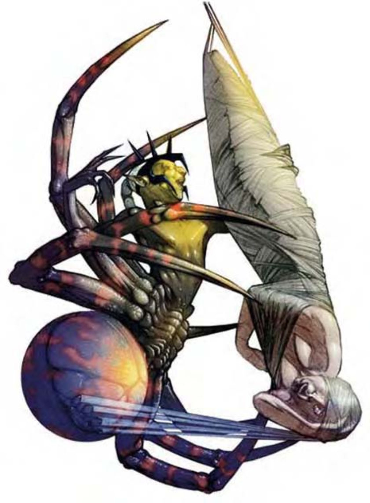

| 资料栏位 | 蛛化精灵 (Drider) 大型异怪 |
| 生命骰 | 6d8+18 (45HP) |
| 先攻 | +2 |
| 速度 | 30英尺 (6格)、攀爬15英尺 |
| 防御等级 | 17 (-1体型、+2敏捷、+6天生)、接触11、措手不及15 |
| 基本攻击/擒抱 | +4 / +10 |
| 攻击 | 匕首+5近战 (1d6+2 / 19-20)；或啮咬+6近战 (1d4+1附加毒素)；或短弓+5远程 (1d8 / ×3) |
| 全力攻击 | 2匕首+3近战 (1d6+2 / 19-20、1d6+1 / 19-20) 及啮咬+1近战 (1d4+1附加毒素)；或短弓+5远程 (1d8 / ×3) |
| 占据/触及 | 10英尺 / 5英尺 |
| 特殊攻击 | 法术、类法术能力、毒素 |
| 特殊能力 | 黑暗视觉60英尺、法术抗力17 |
| 豁免 | 强韧+5、反射+4、意志+8 |
| 属性 | 力量15、敏捷15、体质16、智力15、感知16、魅力16 |
| 技能 | 攀爬+14、专注+9、躲藏+10、聆听+9、潜行+12、侦察+9 |
| 专长 | 战斗施法、双武器攻击、专攻武器 (啮咬) |
| 环境 | 地底 |
| 组织 | 单独、成双或行列 (1-2，加上7-12只中型变种蜘蛛) |
| 挑战级数 | 7 |
| 宝藏 | 双倍标准 |
| 阵营 | 总是混乱邪恶 |
| 进化 | 视人物职业而定 |
| 等级修正值 | +4 |
他们的外型非常怪异，头和躯干像黑暗精灵，但下半身却是巨大的蜘蛛。
蛛化精灵异常嗜血，躲在地底深处不断猎食各种温血动物。
蛛化精灵是黑暗精灵女神罗丝的造物。根骨不错的黑暗精灵男女达到6级时，罗丝女神会让其接受特殊试炼，未能通过试炼者就会变为蛛化精灵。
因为这些蛛化精灵都是试炼的失败者，所以会被放逐于聚落之外。黑暗精灵和蛛化精灵彼此憎恨。
蛛化精灵通晓精灵语、通用语和地底通用语。
战斗只要遇上其他生物，蛛化精灵几乎都会立即发动攻击，尤其偏爱突袭。他们通常会先施展法术攻击，再施展“浮空术”脱离敌人身边。
毒素 (特异)：每次造成伤害后，蛛化精灵就会注入毒素 (强韧检定的DC=16)。初始伤害与后续伤害均为1d6点力量伤害，豁免检定DC的调整值与体质调整值相同。
类法术能力：每天1次――“舞光术” (DC=13)、“锐耳术 / 鹰眼术”、“黑暗术”、“侦测善良”、“侦测守序”、“侦测魔法”、“解除魔法”、“妖火”、“浮空术”、“暗示” (DC=16)。施法者等级6，豁免检定DC的调整值与魅力调整值相同。
法术：蛛化精灵施法时视同6级牧师、法师或术士。蛛化精灵牧师可以选择下列领域：混乱、破坏、邪恶和诡术。以下所列的为蛛化精灵术士的已准备法术列表。
一般已准备术士法术 (6/7/6/4；基本豁免检定DC=13+法术等级)：
零级――“晕眩术”、“侦测魔法”、“幻音术”、“法师帮手”、“冷冻射线”、“阅读魔法”、“提升抗力”；
一级――“法师护甲”、“魔法飞弹”、“衰弱射线”、“无声幻影”；
二级――“隐形”、“蛛网术”；
三级――“闪电束”。
技能：蛛化精灵在进行“躲藏”和“潜行”检定时具有+4种族加值。蛛化精灵在进行“攀爬”检定时具有+8种族加值。即使被冲撞或受威胁，他们在进行“攀爬”检定时都可以随时取10。